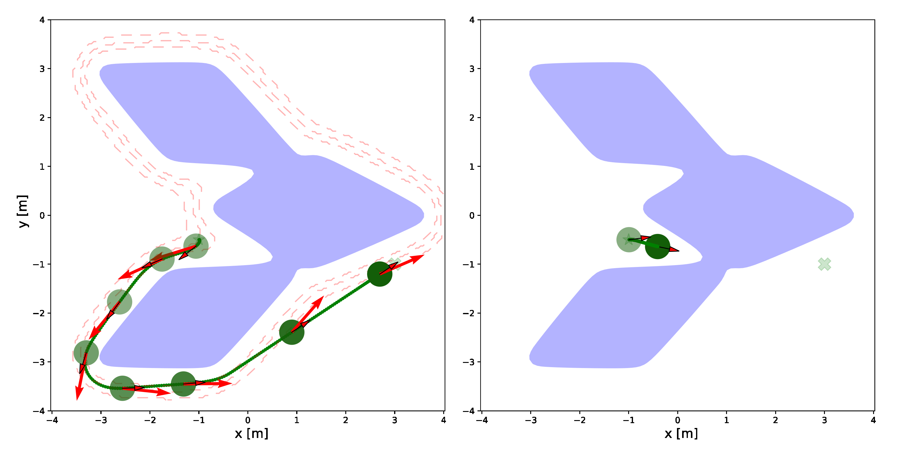
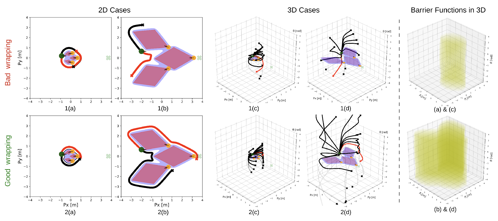
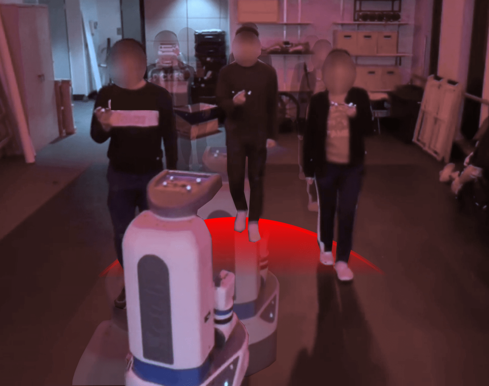
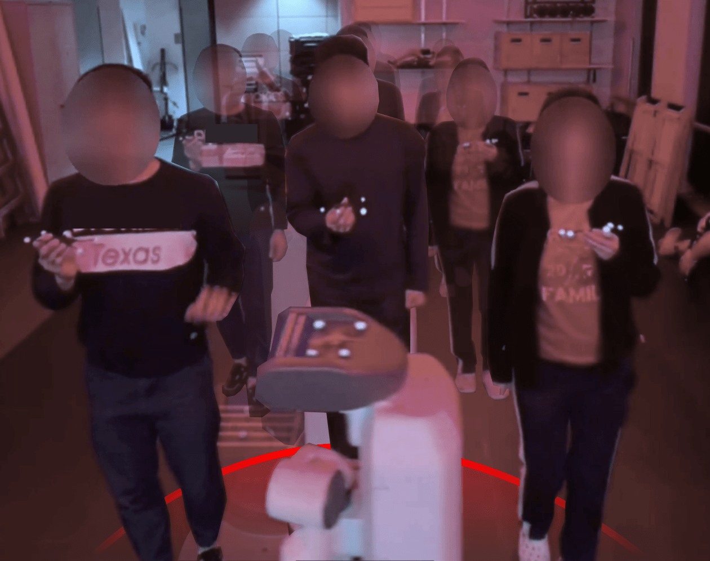
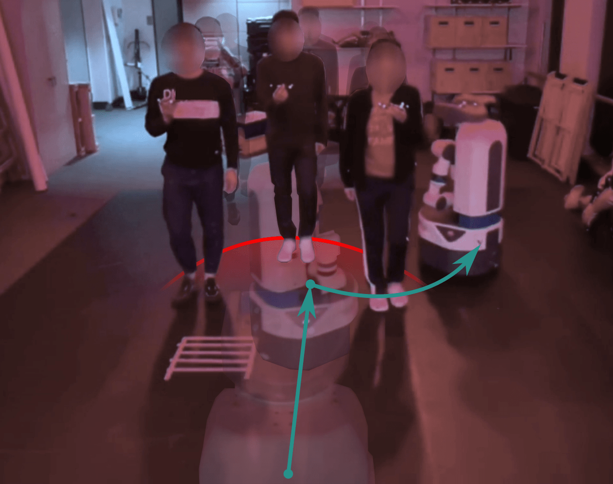
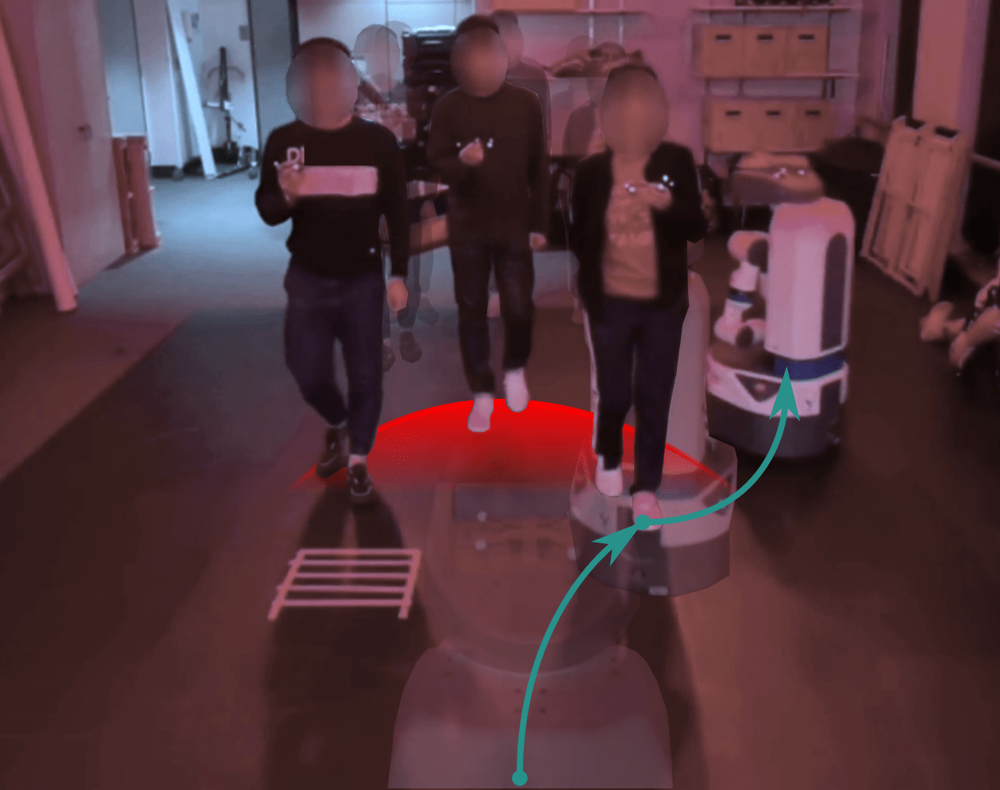

Abstract
This work addresses the challenge of safe and efficient mobile robot navigation in complex dynamic environments with concave moving obstacles. Reactive safe controllers such as Control Barrier Functions (CBFs) design obstacle avoidance strategies based only on the current states of obstacles, risking future collisions. To alleviate this problem, we use Gaussian processes to learn barrier functions online from multimodal motion predictions of obstacles generated by neural networks trained with energy-based learning. The learned barrier functions are then fed into quadratic programs using Modulated CBFs (MCBFs), a local-minimum-free version of CBFs, to achieve safe and efficient navigation. The proposed framework develops a prediction-to-barrier-function online learning pipeline and an autonomous parameter tuning algorithm that adapts MCBFs to deforming, prediction-based barrier functions. The framework is evaluated in both simulations and real-world experiments, demonstrating safe and efficient navigation in crowded dynamic environments.
Contributions
- We develop an online prediction-to-barrier-function pipeline that converts predicted future obstacle occupancy into virtual obstacle representations and continuously learns corresponding distance fields using Gaussian Processes.
- We introduce an adaptive MCBF-QP formulation that combines motion-prediction-based safety constraints with geodesic obstacle-exit guidance for proactive navigation around deforming and non-convex unsafe regions.
- We propose an autonomous parameter-selection method for geodesic approximation that adapts the wrapping step size to the estimated geodesic distance, reducing over-wrapping and under-wrapping as predicted obstacle regions deform.
Method Overview
The proposed Multimodal Motion Prediction–Modulated Control Barrier Function (MMP-MCBF) framework combines motion prediction with safe reactive control. Predicted future motion is first converted into an Estimated Forward Reachable Set (EFRS), which represents regions that a dynamic obstacle may occupy. These predicted regions are transformed into virtual distance fields using online Gaussian Process Distance Fields (GPDFs), and the resulting distance functions are incorporated into Control Barrier Functions. The adaptive MCBF-QP then uses the combined barrier representation to generate obstacle-circumventing control actions while maintaining safety.
- Prediction: Constant Velocity Models (CVMs) and learning-based Energy-Based Models (EBMs) generate future obstacle motion.
- Barrier learning: Predicted occupancy is converted into EFRSs and continuously represented using online GPDFs.
- Control: Adaptive on-manifold MCBF-QP combines safety constraints with geodesic obstacle-exit guidance.

Motion Prediction & Barrier Learning
Estimated Forward Reachable Sets
The motion predictor produces future obstacle states that are converted into a unified Estimated Forward Reachable Set (EFRS). The EFRS captures possible future occupied regions rather than only the obstacle's current geometry, allowing the controller to react before a predicted motion blocks a feasible passage.
Multimodal Motion Prediction
Two prediction models are considered. The Constant Velocity Model (CVM) generates future trajectories from the current and past motion of an obstacle. The learning-based Energy-Based Model (EBM) produces multimodal probability maps of future obstacle positions over multiple time steps, using obstacle history together with a bird's-eye view environmental map.
Online GPDF Learning
Predicted obstacle regions are converted to boundary representations and fed into Gaussian Process Distance Fields. The resulting continuous distance and gradient fields provide the barrier functions used by the MCBF-QP. For EBM predictions, probability maps across the prediction horizon are accumulated, thresholded, and converted into obstacle contours before online GPDF learning.
Adaptive MCBF
Standard MCBF-QP provides tangent guidance for circumventing concave obstacles, but dynamic predicted obstacle regions can deform substantially as motion predictions are updated. In addition, the shortest exit direction around an individual obstacle may not remain appropriate when multiple predicted and physical obstacles overlap. The proposed method therefore uses a combined barrier representation and adapts the geodesic approximation online.
Generalized Geodesic Approximation
When predicted reachable regions overlap with nearby physical obstacles, the exit direction is computed from a combined barrier function representing the local obstacle union. This enables the controller to circumvent concave regions formed by multiple dynamic obstacles, or by dynamic obstacles together with static infrastructure.
Autonomous Parameter Selection
Fixed geodesic-approximation parameters can cause over-wrapping or under-wrapping when predicted obstacle regions expand or shrink. The proposed parameter-selection algorithm estimates the geodesic distance along the relevant obstacle isosurface and selects the step size according to the relationship βN ≈ dgeo. The iteration count is kept fixed to enable efficient JIT compilation, while the step size is updated online as the predicted unsafe region changes.

Experiments
The framework is evaluated on a differential-drive Fetch robot using kinematic simulations, Gazebo simulations, and real-world experiments. Four scenarios cover hospital and crowd-navigation tasks. The robot starts from multiple initial orientations and is evaluated in terms of safety, target-reaching success, optimization feasibility, and travel time.
The evaluation compares MPPI, CBF-QP, MCBF-QP, MMP-MPC, MMP-MPPI, MMP-CBF, and the proposed MMP-MCBF. Motion prediction is provided by the EBM in the hospital scenarios and by the CVM in the crowd-navigation and real-world experiments.

Results
The proposed MMP-MCBF combines motion prediction with the local-minimum-free guidance of MCBF-QP. Across the evaluated hospital and social-navigation scenarios, it maintains collision-free performance while achieving high target-reaching success and competitive execution time. The results also show the benefit of combining prediction with obstacle-exit guidance rather than using prediction alone.
| Method | Runtime Mean (s) | Runtime Std (s) | Safety # | Success # | Infeasibility # | Timespan (s) |
|---|---|---|---|---|---|---|
| MPPI | 0.028 | 0.011 | 10 / 10 / 0 / 10 | 0 / 0 / 9 / 10 | 0 / 0 / 0 / 0 | -- / -- / 18.4 / 23.7 |
| CBF | 0.010 | 0.009 | 10 / 10 / 10 / 2 | 0 / 10 / 9 / 10 | 0 / 1 / 0 / 69 | -- / 28.9 / 25.0 / 16.3 |
| MCBF | 0.018 | 0.009 | 2 / 5 / 4 / 0 | 10 / 4 / 10 / 10 | 59 / 426 / 42 / 122 | 25.0 / 19.3 / 13.2 / 13.4 |
| MMP-MPC | 0.066 | 0.046 | 3 / 0 / 0 / 0 | 0 / 1 / 6 / 4 | 0 / 0 / 0 / 0 | -- / 33.6 / 12.5 / 14.2 |
| MMP-MPPI | 0.045 | 0.005 | 10 / 10 / 10 / 10 | 0 / 0 / 10 / 10 | 0 / 0 / 0 / 0 | -- / -- / 16.1 / 22.5 |
| MMP-CBF | 0.010 | 0.007 | 10 / 10 / 1 / 10 | 1 / 5 / 9 / 10 | 0 / 317 / 77 / 0 | 26.1 / 34.0 / 12.9 / 9.8 |
| MMP-MCBF (Ours) | 0.036 | 0.018 | 10 / 10 / 10 / 10 | 10 / 10 / 10 / 10 | 10 / 0 / 0 / 0 | 31.0 / 19.3 / 15.5 / 9.6 |
Values are reported for Scenarios 1 / 2 / 3 / 4. Safety and success are counts out of ten runs per scenario; infeasibility is the number of time steps in which the solver fails to find a safety-feasible solution.
Real-World Experiments
The proposed framework is further evaluated in real-world crowd-navigation experiments using a Fetch mobile robot. The experiments use a Constant Velocity Model for motion prediction and evaluate navigation around multiple pedestrians moving toward the robot in a U-shaped formation.
The real-world experiments reinforce the simulation results: incorporating predicted future obstacle occupancy allows MMP-MCBF to begin obstacle circumvention proactively, while the MCBF exit guidance helps reduce freezing compared with prediction-based MPC and CBF approaches.

MPC, with prediction

CBF, with prediction

MCBF, no prediction

MCBF, with prediction
Real-world experimental clips are included in the demo video above.
Discussion
The prediction horizon introduces a trade-off between reactivity and conservativeness. In the experiments, the prediction horizon is set to 4 seconds. Longer horizons can shrink the safe region and increase solver infeasibility, whereas shorter horizons can provide insufficient time for the robot to react to future obstacle motion.
The current formulation treats safety as a continuous-time deterministic optimization problem and assumes access to sufficiently complete obstacle geometry once an obstacle enters the detection range. Future extensions include stochastic formulations, online adaptation of the prediction horizon, anomaly detection for long-term prediction failures, and incremental construction of obstacle representations from partial observations.
BibTeX
@article{xue2026mmpmcbf,
title={Proactive Local-Minima-Free Robot Navigation: Blending Motion Prediction with Safe Control},
author={Xue, Yifan and Zhang, Ze and Åkesson, Knut and Figueroa, Nadia},
journal={IEEE Robotics and Automation Letters},
year={2026}
}